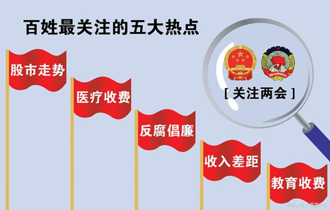

发布时间
Mar 26,2023网络强国，全球瞩目的焦点，如何才能迈向网络强国的宝座呢
首先，强大的基础设施是网络强国的基础。要想在网络空间中占据一席之地，必须确保网络基础设施的稳定、安全和高效运行。这就需要国家加大投资，提高互联网建设水平，实现全面覆盖。 其次，网络安全是网络强国建设的重中之重。国家需要制定完善的法律法规，加强对网络威胁的预警和防范能力，确保国家信息安全。 此外，创新与技术发展也是关键。一个网络强国必须具备自主创新能力和先进的技术实力。国家应鼓励创新科技企业，加强与高校和科研机构的合作，推动关键技术的发展。 同时，网络数字经济也是不可忽视的一环。发展数字经济能够提升国家的经济竞争力，国家应鼓励企业进行数字化转型，推动电子商务、云计算、人工智能等新兴产业的发展。 最后，开放与合作是网络强国的关键。在加强国内网络建设的同时，也要积极参与国际互联网治理和规则制定，与其他国家开展合作与交流，推动网络空间的开放和共享。
网络强国是指一个国家在网络领域具有较高的综合实力和影响力，能够在全球范围内发挥积极的作用。要实现网络强国的目标，以下是一些关键步骤:
- 基础设施建设：确保网络基础设施的稳定、安全和高效运行是网络强国的基础。国家应该加大投资，建设高速、稳定的互联网基础设施，提高网络覆盖率和质量。 基础设施建设是一个国家经济发展的重要组成部分。它包括了道路、桥梁、铁路、机场、港口、电力、通信等各种基础设施建设。这些基础设施的建设不仅可以提高交通运输的效率，还可以促进经济的发展和城市的现代化建设。在中国，基础设施建设一直是国家发展的重中之重。中国政府高度重视基础设施建设，投入了大量的资金和人力资源。近年来，中国在高速公路、高铁、机场、港口等方面取得了巨大的成就。例如，中国高速公路总里程已经超过了14万公里，高铁运营里程已经超过了3.5万公里，中国的机场和港口也在不断扩建和升级。基础设施建设的发展不仅可以促进经济的发展，还可以改善人民的生活。例如，高速公路的建设可以缩短人们的出行时间，提高出行的效率；高铁的建设可以方便人们的出行，缩短城市之间的距离；机场和港口的建设可以促进贸易和旅游业的发展，提高国家的国际地位。总之，基础设施建设是一个国家发展的重要组成部分，它不仅可以促进经济的发展，还可以改善人民的生活。中国政府将继续加大基础设施建设的投入，为国家发展和人民幸福做出更大的贡献。
- 信息安全保障：网络安全是现代社会中不可或缺的一部分，它是网络强国建设的重要保障。随着互联网的普及和信息化的加速发展，网络安全问题也日益成为人们关注的焦点。为了保障国家的网络安全，我们需要建立完善的网络安全法律法规和监管机制，加强对网络威胁的预警和防范能力，提高信息系统的安全性。首先，建立完善的网络安全法律法规和监管机制是保障网络安全的重要保障。我们需要建立一系列的法律法规，明确网络安全的标准和规范，规范网络运营商和用户的行为，加强对网络安全的监管和管理。同时，我们还需要建立专门的网络安全机构，负责协调和管理网络安全事务，确保网络安全的稳定和可靠性。其次，加强对网络威胁的预警和防范能力也是保障网络安全的重要措施。我们需要建立一套完善的网络安全预警机制，及时发现和应对网络威胁，防止网络攻击和数据泄露等安全事件的发生。同时，我们还需要加强对网络安全的技术研究和创新，提高信息系统的安全性，确保网络系统的稳定和可靠性。总之，网络安全是网络强国建设的重要保障，我们需要建立完善的法律法规和监管机制，加强对网络威胁的预警和防范能力，提高信息系统的安全性，确保网络安全的稳定和可靠性。只有这样，我们才能够在网络时代中实现国家的强盛和繁荣。
- 创新与技术发展：网络强国需要具备自主创新能力和先进的技术实力。国家应该鼓励和支持科技企业进行研发和创新，加强与高校和科研机构的合作，培养网络领域的人才，推动关键技术的发展。 创新与技术发展随着科技的不断进步，创新已成为企业和国家发展的重要支撑。在当今世界，各行各业都在加快技术革新的步伐，不断探索新的科技应用领域。在这个大背景下，中国也在不断加大创新和技术发展的力度，不断推动科技与经济融合发展。作为全球第二大经济体，中国已经成为全球创新领域的关键参与者和推动者。中国政府一直在积极推行创新驱动发展战略，致力于提高国家科技创新能力和水平。这使得中国在人工智能、云计算、大数据、物联网等领域取得了长足的进步，并在许多领域处于全球领先地位。同时，中国还在不断加大对科技领域的投入，支持企业和科研机构加强研发创新。这些举措将有助于推动技术创新和产业升级，加快中国的现代化建设步伐。创新和技术发展也为中国带来了机遇和挑战。中国需要不断优化创新生态环境，加强知识产权保护，吸引更多的人才和资本加入到创新领域，以推动中国科技向着更高的水平迈进。可以预见，未来的中国将在创新和技术发展方面继续取得更多的成就，成为全球技术创新的重要引领者。
- 数字经济发展：网络强国需要发展数字经济，提升国家的经济竞争力。国家应该鼓励企业进行数字化转型，推动电子商务、云计算、人工智能等新兴产业的发展，培育创新型企业和创业者。 数字经济发展近年来，数字经济在中国得到了快速的发展，成为了经济发展的重要引擎。数字经济的发展不仅带动了互联网、物联网、人工智能等新技术的兴起，也深刻改变着传统产业的格局和方式。数字经济的快速崛起，促进了信息技术的创新和应用。在数字化趋势下，企业通过互联网平台开展业务，大大降低了成本，提高了效率。同时，数字化还改变了消费者的行为，让消费者更加便捷地获取信息和服务。数字经济的发展也推动了全球经济的变革，为中国走向世界提供了新的机遇。然而数字经济的发展也带来了一些问题，例如数据安全、个人隐私和信息泄露等。因此，我们需要加强对数字经济的监管，推进数字经济和传统经济的融合发展，保障数字化发展的可持续性和稳定性。总的来说，数字经济的发展已经成为了中国经济发展的重要组成部分，它不仅改变了经济的格局和方式，也为中国经济的未来提供了广阔的空间和机遇。
- 开放与合作：网络强国不仅要在国内建设强大的网络体系，还需要与其他国家开展合作与交流。国家应该积极参与国际互联网治理和规则制定，加强与其他国家的合作，推动网络空间的开放和共享。 开放与合作在当今全球化的时代，开放与合作已成为各国共同的选择。中国作为一个大国，也在积极地践行着这一理念。近年来，中国不断推进对外开放，加强与各国的合作，取得了不俗的成就。首先，中国在对外开放方面取得了重要进展。中国加入世界贸易组织20年来，对外开放水平不断提高，形成了全方位、多层次、宽领域的开放新格局。中国已成为全球第二大经济体，是世界最大的商品贸易国和外汇储备国，这充分反映了中国开放的成果。其次，中国在与各国的合作中也展现了积极的态度。中国提出“一带一路”倡议，旨在加强与沿线国家的经济合作，推动共同发展繁荣。同时，中国还积极参与全球治理体系改革，提高了在国际事务中的话语权和影响力。总之，开放与合作是中国的发展方向，也是全球化时代的必然选择。我们应该坚持开放的态度，加强与各国的交流与合作，共同推动世界和平与发展。
- 网络素养普及：网络强国建设需要全社会的参与和支持。国家应该加强网络教育和培训，提高公民的网络素养和安全意识，推动网络文化的健康发展。 网络素养普及随着互联网的普及，网络素养已经成为了现代社会人们必备的技能之一。而在当今信息爆炸的时代，如何提高个人的网络素养已经成为了摆在我们面前的一道难题。首先，我们应该注重个人信息的保护。在使用网络的时候，我们要谨慎地处理自己的个人信息，不要随意泄露。其次，我们要学会使用网络搜索引擎，正确地获取信息。我们应该对信息进行分辨，辨别出真伪，避免被误导。此外，我们还需要学会如何使用网络工具，如何处理网络安全问题，以及如何在网络上进行合法合规的言论发表。提高网络素养需要我们不断地学习和实践。只有通过不断地学习和实践，才能够真正掌握网络技能，并将其运用到生活和工作中。同时，我们也应该加强网络素养的教育和普及，让更多的人能够意识到网络素养的重要性，并在实践中不断提高自己的网络素养。总之，提高网络素养是我们每个人的责任，只有不断地学习和实践，才能够真正地掌握网络技能，保护自己的信息安全，并在网络上发挥更大的作用。 
- 社会治理与法治建设：网络强国建设需要健全的社会治理和法治环境。国家应该加强网络舆论监管，保护公民的网络权益，加强网络信息的真实性和可信度，建立健全的网络法律法规体系。 社会治理与法制建设社会治理与法制建设一直是中国政府的重要工作之一。随着经济社会的不断发展，各种社会问题也不断涌现。因此，政府不断加强社会治理，通过建立健全的法制体系，保障人民群众的合法权益，维护社会稳定和安全。在社会治理方面，政府采取多种措施，如加强社区建设，完善社会救助体系，推进社会信用体系建设等。同时，政府也积极发挥各种社会组织和力量的作用，鼓励广大群众积极参与社会治理。这些措施的实施，有效提升了社会治理水平。在法制建设方面，政府也采取了一系列措施，如加强法律法规的制定和完善，加强司法体制改革，提高司法公正和效率等。同时，政府也加大对法律法规的宣传力度，提高全民法治意识和法律素养。这些措施的实施，有效提升了法制建设水平。总之，社会治理与法制建设是中国政府的重要工作，也是全社会共同努力的方向。未来，政府将继续加强社会治理和法制建设，为人民群众创造更加和谐、稳定、安全的社会环境。
- 实现网络强国并非一蹴而就的过程：这需要我们持续不断地投入大量的资源和精力，同时也需要我们不断地创新和改进。网络强国建设是一个全方位的过程，需要我们在技术、政策、人才等多个方面进行协同推进。首先，在技术方面，我们需要不断地提升网络基础设施的建设水平，加强网络安全防护能力，提高网络传输速度和稳定性，同时还要积极推广新技术，如5G、人工智能等，以推动网络技术的发展。其次，在政策方面，我们需要建立完善的网络法律法规体系，加强网络监管和管理，保障网络安全和信息安全，同时也要鼓励创新和创业，为网络企业提供更好的发展环境和政策支持。最后，在人才方面，我们需要加强网络人才的培养和引进，提高网络从业人员的素质和能力，同时也要鼓励更多的人才投身于网络行业，为网络强国建设贡献自己的力量。总之，实现网络强国需要我们在多个方面进行协同推进，需要我们持之以恒地投入资源和精力，只有这样，我们才能够在网络领域取得更大的发展和进步，让中国成为真正的网络强国。，需要长期的努力和持续的投入。各个方面的工作都需要国家、企业、学术界和社会各界的共同努力，共同推动网络强国建设的进程。

总而言之，实现网络强国需要国家、企业、学术界和社会各界的共同努力。让我们共同期待这个信息时代的辉煌未来！在这里，我们鼓励每个人积极参与到网络强国的建设中来，通过评论区分享你的想法和观点！让我们共同见证这个时代的变革与进步！